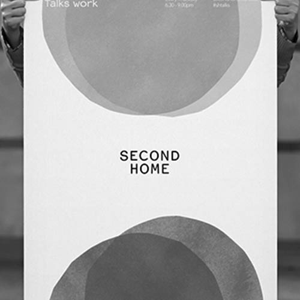
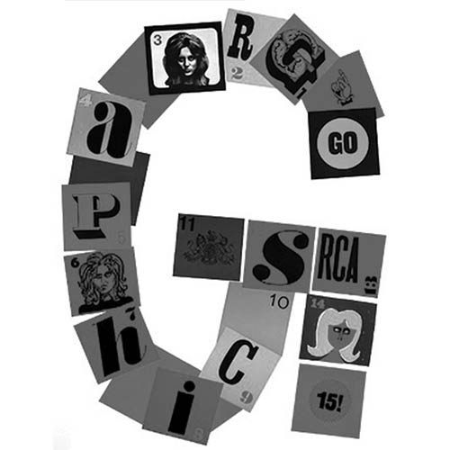
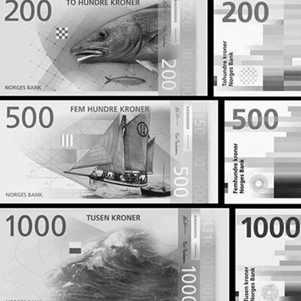
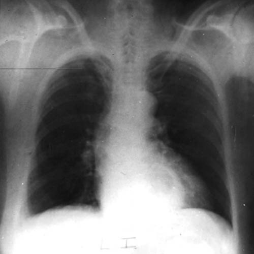

12 Column Grid
12
Grid Options
Robert Hetherington
The Reconfiguration of a Discipline: Part II
Is it time for graphic designers to reappraise the profession?
Jessica Helfand
Questionable Inheritances
Today, a search for Paul Rand will bring you, in seconds, to Rand Paul. But it was not always so, and for this we can thank Leon Wieseltier, whose departure from a 30-year reign at The New Republic was just announced.
Robert Hetherington
The Reconfiguration of a Discipline: Part I
How we interact with information is changing design-and design education.

Teal Triggs
Teal Triggs in Conversation with Marina Willer
“I never liked working on my own. I love collaboration. I love people.”
Adrian Shaughnessy + Teal Triggs
Graphic Language
A discussion on graphic design teaching, learning, and thinking.
Debbie Millman
Emily Spivack
On this episode of design matter, Debbie Millman talks to writer and curator Emily Spivack about how our clothes are more than fabric and thread.

Adrian Shaughnessy + Teal Triggs
GraphicsRCA: Fifty Years
Kicking off a week celebrating a new exhibition in London.

Michael Bierut + Jessica Helfand
The Observatory: Dollars and Change
On this episode of the Observatory, Michael Bierut and Jessica Helfand discuss the midterm election and currency design. Plus Jessica imitates a London cabbie, and Michael nails the pronunciation of our sponsor.

Carrie Adams
When Your Body is Another Stranger: A Poem
When Your Body is Another Strange: A Poem
Contributors
- Michael Bierut
- John Foster
- Jessica Helfand
- Adam H. Levy
- Debbie Millman
- Bonnie Siegler
- Rob Walker
- Erik Spiekermann – Berlin
- Adrian Shaughnessy – London
- Véronique Vienne – Paris
Creative Opportunities
Production Creation Studio
Seattle, WA
Full Time Industrial Design
Internship
BMW Group
DesignWorksUSA
Shanghai, China
Director, Strategic Partnering